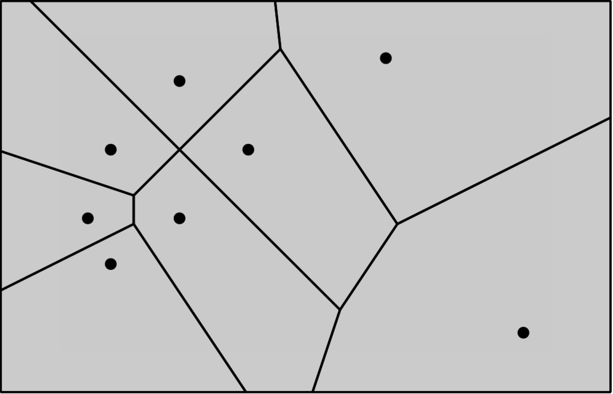
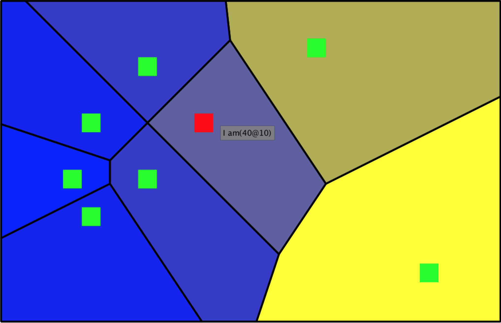
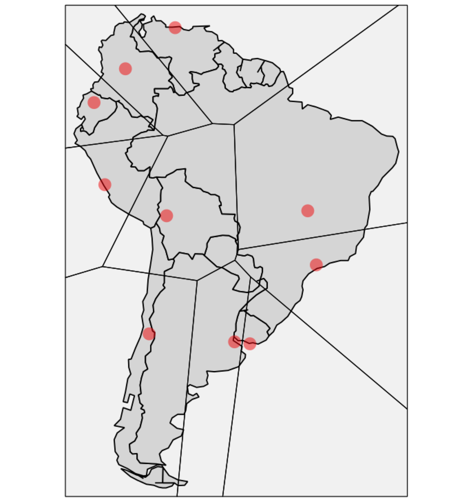
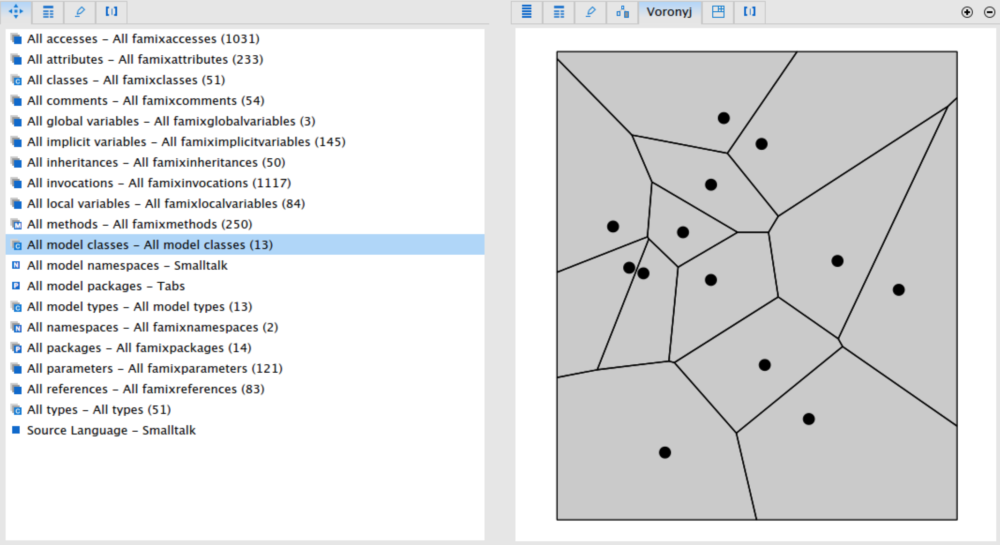

Quick introduction
Voronyj (Voronoi) diagrams have been used for more than 300 years in epidemiology, architecture, mining and machine learning. Now we not only provide the support for it in Roassal 2, but also suggest an approach to visualize a software with Voronyj diagrams.
How to Download
To download this just choose one method from the next options:
- download the image from the link above CI server
-
run this code in Pharo 3 image
Gofer new smalltalkhubUser: 'NataliaTymchuk' project: 'RTVoronyjDiagram'; configuration; load. #ConfigurationOfRTVoronyjDiagram asClass loadDevelopment -
download thought Monticello using the repository:
MCSmalltalkhubRepository owner: 'NataliaTymchuk' project: 'RTVoronyjDiagram'
How to Use
A simple diagram needs the objects and block, which gives the position of the objects. For example you can do:
| builder |
builder := RTVoronyjBuilder new .
builder objects: {
10 @ 40 . 40 @ 10 . 10 @ -20 . -20 @ 10.
-20 @ 60 . -30 @ 40 . 160 @ 90 . 100 @ -30 }.
builder positionBlock: #yourself.
builder open.
You will get this image 
Customizing Diagram
When we are looking on the previous image the question the question can turned up whether you can make the diagram more informative and interesting? Actually - yes. This builder provides a lot of properties to customize the diagram.
Builder properties
First of all you can work with the cells:
Cell Color
builder color: Color blue.The builder allows you to do even more with the color. As usual in Roassal you can use normalization of the color, for example
Cell Normalized Color
cn := RTNColorLinearNormalizer
inContext: objects
withCommand: #x
lowColor: (Color r:0 g:0 b:1)
highColor: (Color r:1 g:1 b:0).
builder color: cn.Frame
The builder uses the frame, which is bounding the cells. You can set the frame. For example
frameBlock: [ 0 @ 0 corner: 500 @ 500 ]or
frameBlock: [view elements encompassingRectangle expandBy: 10 ]Don't worry if it happens than your frame does not contain all the points or object, it will be merged with minFrame.
Site properties
The sites are built by RTSiteBuilder and can be accessed by the message site.
It uses ShapeBuilder, that's why you can use all the features of the ShapeBuilder. So you can add:
Color
builder sites shape
color: Color yellow.Shape
builder sites shape rectangle.Size
builder sites shape
size: 30.Interaction
- Popup text:
builder sites interaction popupText: [ :obj | 'I am', obj asString ]. - Highlight color
builder sites interaction highlightColored: Color red.
Now let's see what we can get with using previous properties. Here is the code
| builder cn objects |
objects := { 10 @ 40 . 40 @ 10 . 10 @ -20 . -20 @ 10.
-20 @ 60 . -30 @ 40 . 160 @ 90 . 100 @ -30 }.
cn := RTNColorLinearNormalizer
inContext: objects
withCommand: #x
lowColor: (Color r:0 g:0 b:1)
highColor: (Color r:1 g:1 b:0).
builder := RTVoronyjBuilder new .
builder objects: objects.
builder positionBlock: #yourself.
builder color: cn.
builder sites shape rectangle;
color: Color green;
size: 10.
builder sites interaction
popupText: [ :obj | 'I am', obj asString ];
highlightColored: Color red.
builder build.
builder view
@ RTZoomableView;
openwhich will give you this result
Work with Frameworks
You can use it for building the diagram with some point, as previous or you can use it with the other project.
Diagram on Map
You may know about great project on Roassal called MapBuiler. You can build your map and then use RTVoronyjBuilder to draw Voronyj diagrams. This way you can see for example which city is closest to you or if you want to find small city which is the closest for job. You just need to add a few lines of code:
| builder view |
builder := RTMapBuilder new.
builder countries: RTMapBuilder southAmerica.
builder cities: #('Santiago''Bogota''Buenos Aires'
'Brasilia''Montevideo''Lima''La Paz'
'Quito''Sao Paulo''Caracas').
builder color: Color veryVeryLightGray.
builder scale: 3.
builder withPopup.
named: [ :c | c at: 1 ].
builder color: Color veryVeryLightGray.
builder scale: 3.
"next code is used to add Voronyj Diagram"
view := RTView new.
builder renderIn: view.
RTVoronyjBuilder new
objects: (view elements select:[:e
| e shape class = RTEllipse ]);
positionBlock: #position;
doNotRenderSites;
color: (Color black alpha: 0.05);
renderIn: view.
viewIt looks
Future work
I'm researching if it possible to analyze the software using Voronyj diagram. Like a lot of other things software artifacts don't have physical coordinates, however until now I already get such prototype:
